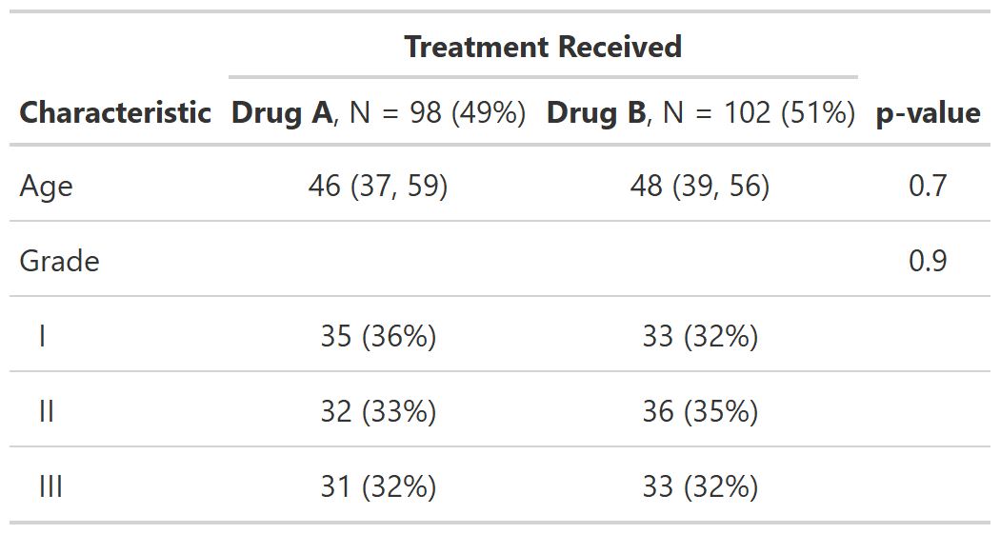
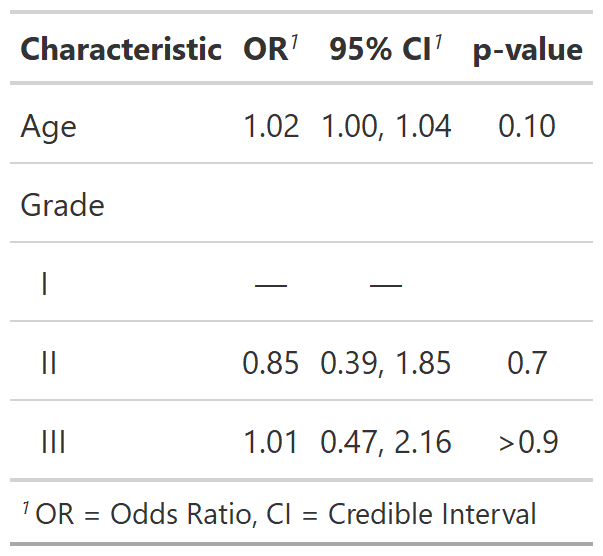

These functions assist with updating or adding column headers
(modify_header()), footnotes (modify_footnote()), spanning
headers (modify_spanning_header()), and table captions
(modify_caption()). Use show_header_names() to learn
the column names.
modify_header( x, update = NULL, text_interpret = c("md", "html"), quiet = NULL, ..., stat_by = NULL ) modify_footnote( x, update = NULL, abbreviation = FALSE, text_interpret = c("md", "html"), quiet = NULL ) modify_spanning_header( x, update = NULL, text_interpret = c("md", "html"), quiet = NULL ) modify_caption(x, caption, text_interpret = c("md", "html")) show_header_names(x = NULL, quiet = NULL)
Arguments
| x | a gtsummary object |
|---|---|
| update | list of formulas or a single formula specifying the updated
column header, footnote, or spanning header.
The LHS specifies the column(s) to be updated, and the RHS is the updated text.
Use the |
| text_interpret | String indicates whether text will be interpreted with
|
| quiet | Logical indicating whether to print messages in console. Default is
|
| ... | Specify a column and updated column label,
e.g. |
| stat_by | DEPRECATED, use |
| abbreviation | Logical indicating if an abbreviation is being updated. |
| caption | a string of the table caption/title |
Value
Updated gtsummary object
tbl_summary(), tbl_svysummary(), and tbl_cross()
When assigning column headers, footnotes, spanning headers, and captions
for these gtsummary tables,
you may use {N} to insert the number of observations.
tbl_svysummary objects additionally have {N_unweighted} available.
When there is a stratifying by= argument present, the following fields are
additionally available to stratifying columns: {level}, {n}, and {p}
({n_unweighted} and {p_unweighted} for tbl_svysummary objects)
Syntax follows glue::glue(), e.g. all_stat_cols() ~ "**{level}**, N = {n}".
tbl_regression()
When assigning column headers for tbl_regression tables,
you may use {N} to insert the number of observations, and {N_event}
for the number of events (when applicable).
captions
Captions are assigned based on output type.
gt::gt(caption=), available in gt version >0.2.2
Example Output
Example 1

Example 2

Example 3

See also
Other tbl_summary tools:
add_n.tbl_summary(),
add_overall(),
add_p.tbl_summary(),
add_q(),
add_stat_label(),
bold_italicize_labels_levels,
inline_text.tbl_summary(),
inline_text.tbl_survfit(),
tbl_merge(),
tbl_stack(),
tbl_summary()
Other tbl_svysummary tools:
add_n.tbl_summary(),
add_overall(),
add_p.tbl_svysummary(),
add_q(),
add_stat_label(),
tbl_merge(),
tbl_stack(),
tbl_svysummary()
Other tbl_regression tools:
add_global_p(),
add_q(),
bold_italicize_labels_levels,
combine_terms(),
inline_text.tbl_regression(),
tbl_merge(),
tbl_regression(),
tbl_stack()
Other tbl_uvregression tools:
add_global_p(),
add_q(),
bold_italicize_labels_levels,
inline_text.tbl_uvregression(),
tbl_merge(),
tbl_stack(),
tbl_uvregression()
Other tbl_survfit tools:
add_n.tbl_survfit(),
add_nevent.tbl_survfit(),
add_p.tbl_survfit(),
tbl_merge(),
tbl_stack(),
tbl_survfit()
Author
Daniel D. Sjoberg
Examples
# create summary table tbl <- trial[c("age", "grade", "trt")] %>% tbl_summary(by = trt, missing = "no") %>% add_p() # print the column names that can be modified show_header_names(tbl)#>#>#> #> #> #> #> #>#> #> #> Column Name Column Header #> ------------ -------------------- #> label **Characteristic** #> stat_1 **Drug A**, N = 98 #> stat_2 **Drug B**, N = 102 #> p.value **p-value**# Example 1 ---------------------------------- # updating column headers, footnote, and table caption modify_ex1 <- tbl %>% modify_header( update = list(label ~ "**Variable**", p.value ~ "**P**") ) %>% modify_footnote( update = all_stat_cols() ~ "median (IQR) for Age; n (%) for Grade" ) %>% modify_caption("**Patient Characteristics** (N = {N})") # Example 2 ---------------------------------- # updating headers, remove all footnotes, add spanning header modify_ex2 <- tbl %>% modify_header(update = all_stat_cols() ~ "**{level}**, N = {n} ({style_percent(p)}%)") %>% # use `modify_footnote(everything() ~ NA, abbreviation = TRUE)` to delete abbrev. footnotes modify_footnote(update = everything() ~ NA) %>% modify_spanning_header(all_stat_cols() ~ "**Treatment Received**") # Example 3 ---------------------------------- # updating an abbreviation in table footnote modify_ex3 <- glm(response ~ age + grade, trial, family = binomial) %>% tbl_regression(exponentiate = TRUE) %>% modify_footnote(ci ~ "CI = Credible Interval", abbreviation = TRUE)